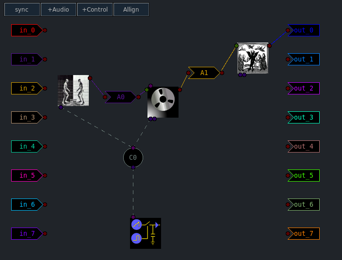
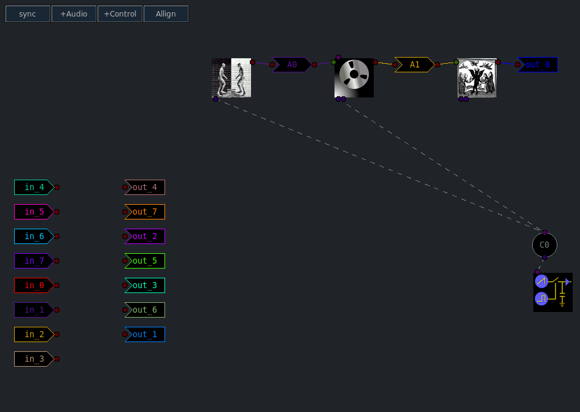

The "Graph" is a GUI component which shows how synths are patched
together. It may also be used to create and destroy buses and to delete
synths. Much of the graph capabilities were discussed starting
here and continuing
here.
This page details miscellaneous graph features not touched on before.
Clicking the "Align" button attempts to place all icons into ordered rows and columns. It does work but if there are many paths going between the icons it can get pretty messy. The align button placces the synth tokens in serial order from right to left. In other words after an Align synths on the right may be used to process anything to their left. Once a row has been filled the spillover begins a new row. A synth may process any synth in a lower row.
The two images below illustrate the Align feature.
Manually arranged
After clicking Align
